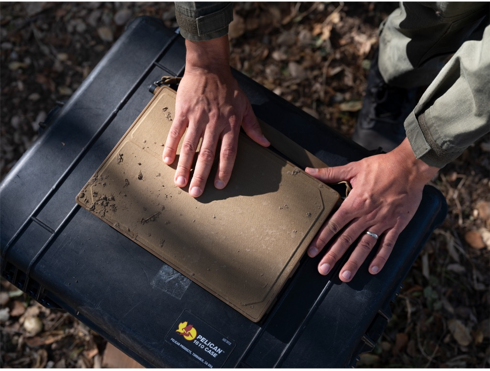

科技產品 T1
本篇同批更新中的M6 iMac官方圖，非舊型號或觸控MacBook傳聞。 Apple
Apple 發表 M6 版十四吋 MacBook Pro 與 iMac，十月二十八日開放預購
發佈時間
Apple／14-inch MacBook Pro with M6、iMac with M6
Apple把M6帶入十四吋MacBook Pro及24吋iMac，確認十月二十八日預購、十一月六日開始供貨。
- 十四吋MacBook Pro採12核心CPU及12核心GPU，美國US$1,999起。
- iMac保留24吋4.5K螢幕與七色，10核心CPU／GPU版US$1,499起、12核心版US$1,699起。
- 兩者均列Wi-Fi 7及Bluetooth 6；MacBook Pro最長24小時續航是原廠測試聲明。
完整報告收合報告
事件背景與影響
同批更新涵蓋行動與桌上工作流程；正式規格讓購買者能區分晶片更新與傳聞中的觸控機型。
事件與發佈依據
Apple Newsroom兩篇十月二十七日正式公告，不把尚未舉行的Pro and tell活動預測混入規格。
收錄紀錄
窄查M6與MacBook／iMac，10/14–10/27十四份日報無命中，再完整核對45列同窗表，未收錄此次更新。
尚待確認
效能與電池為公司特定測試，不是本報實測；美元價格不推算台灣售價。不同機型CPU／GPU配置不同，不能把最高規格套用所有iMac。
相關實體與概念
Apple、M6、MacBook Pro、iMac、預購、裝置端AI
科技產品 T2

官方BlueChip原型展示圖，不代表最終量產規格或本報耐用測試。 Anduril
Anduril 與 Qualcomm 公布 BlueChip 筆電計畫，預定二〇二七年開始接單
發佈時間
Anduril、Qualcomm／BlueChip
BlueChip將先推出採Snapdragon X系列的平台筆電，在美國設計組裝，主要面向政府、國防及公共安全用途。
- 官方稱已有功能原型，預計2027年開始接單，未公布確切月份及價格。
- 電路板組裝規劃在俄亥俄州Arsenal-1，逐步擴展美國零組件供應。
- 原型超過90%的零件採購成本流向美國及盟國供應商，不等於超過90%零件均在美國製造。
完整報告收合報告
事件背景與影響
計畫把供應鏈來源與可追溯性納入電腦採購，但完整國產供應鏈仍是長期目標。
事件與發佈依據
Qualcomm十月二十七日新聞稿確認產品線、可運作原型及2027接單計畫，是具體路線公告而非已上市。
收錄紀錄
BlueChip與Snapdragon窄查十四份日報無同事件，再核45列同窗表；不是此前軍用設備或一般Snapdragon筆電的重述。
尚待確認
完整規格、量產數量與最終售價未定；美國組裝、盟國採購及全美製造是不同概念，也沒有已完成全面相容性驗證的證據。
相關實體與概念
Anduril、Qualcomm、BlueChip、Snapdragon X、美國製造、供應鏈
全球焦點 1
續報｜以色列完成國會投票，出口民調顯示兩大陣營均未過半
發佈時間
出口民調顯示Netanyahu與Eisenkot所領陣營都未取得120席國會中的61席多數。
- 這是2023年十月七日襲擊後首次全國選舉。
- 選民投政黨，各黨再協商聯盟。
- 出口民調不是正式結果，也不代表新政府已成立。
完整報告收合報告
事件背景與影響
總理人選仍取決於計票與組閣，不是單一政黨得票最多就自動執政。
事件與發佈依據
當地十月二十七日22時投票結束後公布出口民調，即20:00UTC；不以AP滾動頁清晨首發時間代替此更新。
收錄紀錄
10/19收錄Trump背書及10/26選前限制；新增實際投票結束與出口民調，尚非正式席次認證。
尚待確認
各台出口調查不同，席次仍可能變動；不預先宣告誰當選總理。
相關實體與概念
以色列、Knesset、Netanyahu、Gadi Eisenkot、出口民調、組閣
全球焦點 2
俄烏在 Oleshky 開始局部停火，為援助與平民撤離創造條件
發佈時間
俄烏確認Oleshky與周邊人道任務所需地區暫停交火，準備援助及撤離安排。
- 雙方稱當地凌晨三時開始，對應01:00UTC。
- 排雷、物資運送及撤離需分階段，不能把停火開始等同援助已全數送達。
- Melania Trump辦公室稱曾促成談判；俄軍在其他城市的攻擊並未全面停止。
完整報告收合報告
事件背景與影響
受困居民需要物資與安全通行，但局部執行不等於整場戰爭停火。
事件與發佈依據
AP十月二十七日01:01:45UTC首次報導當日實際生效；協議先前公布只是背景。
收錄紀錄
十四份日報未收錄此項停火執行；與其他地區飛彈攻擊、能源停火主張分開。
尚待確認
停火邊界與持續遵守情況仍待核；白宮原定日期與雙方實際生效日期不同，以執行日為準。
相關實體與概念
烏克蘭、俄羅斯、Oleshky、人道援助、局部停火
全球焦點 3
續報｜剛果伊波拉確診突破一萬例，官方新通報反映防疫追蹤缺口
發佈時間
剛果民主共和國通報伊波拉累計確診10,060例；ECDC當日資料列相關死亡4,887人。
- ECDC說明本批資料截至十月二十五日，並於十月二十七日發布。
- 疫情涉及八省，並非八省在今天才同時出現病例。
- AP指出許多新病例不在已追蹤接觸者之中，顯示尚有未掌握傳播鏈。
完整報告收合報告
事件背景與影響
病例累計與接觸者追蹤缺口顯示防疫壓力，必須分清資料涵蓋日與新聞發布日。
事件與發佈依據
Reuters十月二十七日08:30UTC報導新官方情勢報告；不是今日單日新增一萬病例。
收錄紀錄
10/14收錄九千例、10/19第八省及10/22跨國會議；新增10,060例官方累計通報。
尚待確認
監測不完整，通報不等於所有實際感染；不由此推算個人風險或提供治療建議。
相關實體與概念
剛果民主共和國、Ebola、Bundibugyo、ECDC、接觸者追蹤
全球焦點 4
續報｜約旦與敘利亞同意聯合調查空襲，約方承認有平民死亡
發佈時間
雙方同意調查昨日空襲及其後果；約旦稱打死約二十名IS成員，也承認平民死亡。
- 敘方通報七名平民死亡，約方的武裝分子數不能直接加成共同認證總數。
- 外長通話後聲明提出現場及情報協調機制。
- 昨日是否事前協調的矛盾並未因今天同意調查而消失。
完整報告收合報告
事件背景與影響
事件由相互指控進入聯合調查，但責任與不同傷亡口徑仍未釐清。
事件與發佈依據
AP當日更新與轉載在22:45UTC前已載聯合委員會，落在截點前；不拿上午首稿時刻標示較晚新增段落。
收錄紀錄
10/27收錄空襲及事前協調爭議；今日新增聯合調查機制與約旦承認平民傷亡。
尚待確認
死者身分及人數尚未獨立共同核實；成立調查不等於已有結論或責任判定。
相關實體與概念
約旦、敘利亞、IS、Al-Tuff、聯合調查、平民保護
全球焦點 5
AP 新調查稱俄羅斯衛星活動與沙烏地遭攻擊目標高度重疊
發佈時間
AP引述私人地理情報公司分析四十次攻擊，指出俄國衛星在目標上空活動與攻擊有一致模式。
- 樣本涵蓋七月一日至十月十九日，並非今日新增四十次襲擊。
- 分析由AURORAH Geosignal Intelligence提供。
- 報導另引述青年運動高層談情報來源，仍屬受訪者說法。
完整報告收合報告
事件背景與影響
新證據涉及情報如何支援區域衝突，但活動重疊與直接作戰指揮是不同命題。
事件與發佈依據
AP十月二十七日15:11:35UTC首次公開新分析與訪談；七月至十月舊攻擊為研究樣本。
收錄紀錄
十四份日報未見此份衛星分析，不重列沙烏地機場或油管原先攻擊。
尚待確認
不能僅由軌道相關性判定每次情報傳遞及責任；本報未取得完整原始資料重做分析。
相關實體與概念
俄羅斯、沙烏地、衛星情報、青年運動、AURORAH
全球焦點 6
土耳其國會委員會通過與沙烏地、巴基斯坦的共同防禦協議
發佈時間
外委會通過Mecca Joint Defense Agreement，下一步仍需全體國會辯論及投票。
- 協議把攻擊其中一國視為對三國的攻擊。
- 文件包括軍事合作、技術轉移與情報分享。
- 全體國會表決日期尚未確定，不能稱批准程序完成。
完整報告收合報告
事件背景與影響
協議推進區域集體防衛合作，也引發土耳其是否被捲入他國衝突的爭論。
事件與發佈依據
AP十月二十七日13:39:01UTC報導當日外委會表決，不重列八月簽署。
收錄紀錄
十四份日報沒有本次外委會表決；10/27埃及授權支援沙國是另一國家的獨立行動。
尚待確認
政府強調防禦用途，反對派質疑義務範圍；不推定已向葉門部署軍隊。
相關實體與概念
土耳其、沙烏地、巴基斯坦、Mecca Agreement、共同防禦
全球焦點 7
羅馬尼亞召見俄國大使，抗議涉嫌由俄方協調的破壞行動
發佈時間
羅馬尼亞稱情報調查發現俄方協調網絡，召見俄使抗議；俄方否認並指未獲證據。
- 調查涉及兩名白俄羅斯人及一名烏克蘭人。
- 俄使館拒絕指控，與羅方所稱已提出證據直接矛盾。
- 不能把嫌疑人國籍等同指揮方，或把九月火災說成今天發生。
完整報告收合報告
事件背景與影響
指控把工業火災連至跨國破壞活動，涉及NATO成員安全，但仍須區分調查指控與定罪。
事件與發佈依據
AP十月二十七日12:23:30UTC報導當日召見及總統聲明；九月十四日火災是調查背景。
收錄紀錄
十四份日報的羅馬尼亞黑海船舶事件不同，未收錄本次Brasov調查與召見。
尚待確認
責任歸屬為羅方調查主張，俄方否認；影像片段不等於完整證據鏈已公開驗證。
相關實體與概念
羅馬尼亞、俄羅斯、SRI、DIICOT、Brasov、破壞活動
全球焦點 8
奈及利亞官方通報 Binnari 襲擊至少六十二死，搜救仍在進行
發佈時間
國家緊急管理機構官員稱Taraba州Binnari襲擊至少六十二死、五十二傷，數千人流離失所。
- AP同稿另稱已尋獲五十二具遺體，包含河中十五具。
- 警方表示仍在搜尋，數字不是最終結果。
- 武裝幫派與其他極端組織不可在缺乏證據下視為同一行動者。
完整報告收合報告
事件背景與影響
新確認反映居民遭襲後的搜救與安置規模，較早事件日期不可被新聞發布日取代。
事件與發佈依據
AP十月二十七日10:39:50UTC報導緊急管理單位當日新通報；襲擊本身發生在十月二十三日。
收錄紀錄
十四份日報未收錄Binnari這批官方確認；不能把其他地區襲擊傷亡混入。
尚待確認
六十二死與五十二具遺體口徑尚未釐清，保留兩者，不自行補出十名失蹤者或宣稱同一統計。
相關實體與概念
奈及利亞、Taraba、Binnari、NEMA、搜救、流離失所
全球焦點 9
洛杉磯聯邦法院就加州約兩萬名選民的爭議選票舉行聽證
發佈時間
法官David O. Carter聽取司法部與加州對名單及計票限制的主張，涉及公民身分核驗爭議。
- 爭議名單約兩萬人，不等於兩萬張非法選票已投出。
- 州與聯邦對抽樣名單準確性各有說法。
- 本篇截至截點報聽證，不宣稱法院已批准或駁回所有實體請求。
完整報告收合報告
事件背景與影響
選舉進行中的名單準確性與合法選民權利都受影響，司法部懷疑不等於已證實非法投票。
事件與發佈依據
AP十月二十七日19:37:46UTC報導當日實際地院聽證；不以昨日上訴程序或今日更正引言當新裁決。
收錄紀錄
十四份日報未收錄此次聽證，10/27未選入該案；本次只報新程序，不重列十月十五日起訴。
尚待確認
名單與已交選票數不能互換；本報未逐一核驗名單，也不提供個別法律意見。
相關實體與概念
加州、David O. Carter、司法部、郵寄選票、公民身分
全球焦點 10
英國十月商店物價年增二點一％，食品及非食品漲幅同步加快
發佈時間
BRC與NIQ指十月商店物價年增2.1%，高於九月1.4%，零售商表示成本轉嫁壓力增加。
- 食品年增2.9%，前月2.5%；非食品1.7%，前月0.8%。
- 官方列採樣期間為十月一日至七日。
- BRC的稅負與成本政策訴求是產業組織立場，不是政府已作決定。
完整報告收合報告
事件背景與影響
商品價格反映家庭購物壓力，但此指數不能取代涵蓋服務與能源的整體CPI。
事件與發佈依據
當地十月二十七日00:01UTC發布時段，Guardian首發20:01EDT交叉核；BRC官方頁標10/27，不把資料採樣週當發布日。
收錄紀錄
十四份日報無本批十月BRC商店價格統計，與官方CPI及零售銷量不同。
尚待確認
不能由單月商品指數推定利率決策、未來物價或個別商店必然漲價；資料範圍與官方CPI不同。
相關實體與概念
英國、BRC、NIQ、商店物價、食品通膨、CPI
研究備註
時間、來源與後續追蹤
研究截點 2026-10-28 07:58:50（Asia/Taipei）
研究時間與範圍
研究截點：2026-10-28 07:58:50（Asia/Taipei）。全球新聞：2026-10-27 07:58:50 至 2026-10-28 07:58:50（Asia/Taipei）。科技產品：2026-10-14 07:58:50 至 2026-10-28 07:58:50（Asia/Taipei）。